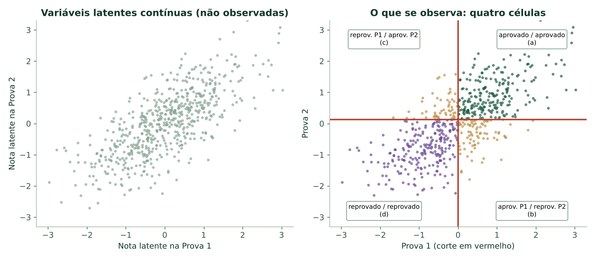
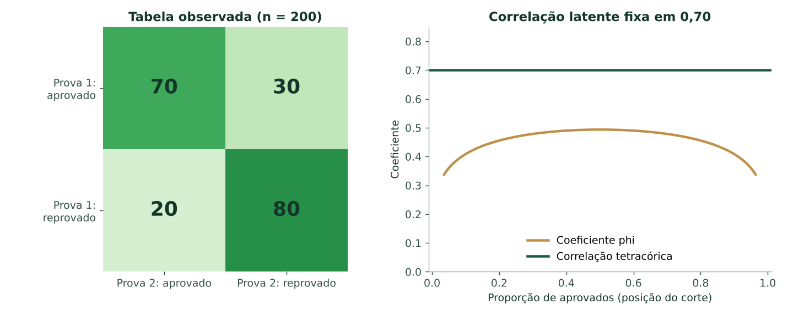

Correlação tetracórica
Estima a correlação entre duas variáveis contínuas não observadas a partir de uma tabela 2 × 2.
Comece por aqui
Aprovado ou reprovado, defeituoso ou conforme, positivo ou negativo: muitas variáveis binárias são, na verdade, o recorte de uma medida contínua. Por trás de “aprovado” existe uma nota; por trás de “positivo”, uma concentração. Quando duas variáveis desse tipo são cruzadas em uma tabela 2 × 2, a correlação tetracórica estima qual seria a correlação entre as duas medidas contínuas que não foram registradas.
O coeficiente foi proposto por Karl Pearson em 1900. O nome vem do grego tetra (quatro) e choros (região): as quatro regiões em que dois cortes dividem o plano.
O que é o coeficiente
Supõe-se que existam duas variáveis contínuas não observadas (latentes), com distribuição normal bivariada e correlação \(\rho\). Cada uma foi dicotomizada em um ponto de corte (limiar). O que se observa são apenas as quatro frequências da tabela. A correlação tetracórica é o valor de \(\rho\) que torna a normal bivariada compatível com essas quatro frequências.

O coeficiente phi é o Pearson das variáveis 0/1 e descreve a associação entre as categorias como foram observadas. A tetracórica estima a associação entre as variáveis contínuas subjacentes. Use phi quando as categorias são genuínas (por exemplo, duas máquinas) e tetracórica quando são cortes de um contínuo.
Pressupostos e como verificá-los
| Pressuposto | Por que importa | Como verificar |
|---|---|---|
| Cada variável binária é o corte de uma contínua | Sem variável latente, o coeficiente não tem interpretação. | Conhecimento do processo de medida (nota, concentração, escala). |
| Normalidade bivariada das variáveis latentes | É o modelo que transforma frequências em correlação. | Não é testável com uma tabela 2 × 2 (não sobram graus de liberdade); precisa ser plausível pelo contexto. |
| Observações independentes | Cada unidade contribui para uma única célula. | Delineamento do estudo. |
| Nenhuma célula vazia e amostra razoável | Com células nulas a estimativa vai para ±1 e fica instável. | Inspecione a tabela; prefira n na casa das centenas. |
| Proporções marginais não extremas | Cortes muito distantes do centro (menos de 5% em uma categoria) tornam a estimativa imprecisa. | prop.table(tab) e margens. |
Hipóteses e estimação
A tetracórica é, antes de tudo, um estimador. Quando se deseja testar a ausência de associação, a hipótese \(H_0:\rho=0\) equivale à independência na tabela 2 × 2, testada pelo qui-quadrado ou pelo teste exato de Fisher.
Em que:
- \(a,\ b,\ c,\ d\)
- frequências da tabela: \(a\) = positivo nas duas variáveis; \(d\) = negativo nas duas; \(b\) e \(c\) = discordantes
- \(n\)
- total de observações
- \(h,\ k\)
- limiares (pontos de corte) das duas variáveis latentes padronizadas
- \(\Phi^{-1}\)
- função quantil da normal padrão (
qnormno R) - \(\phi_2(x,y;\rho)\)
- densidade da normal bivariada padrão com correlação \(\rho\)
- \(\hat\rho\ \text{ou}\ r_t\)
- correlação tetracórica: valor de \(\rho\) que resolve a equação
- \(ad/bc\)
- razão de chances da tabela
Exemplo numérico, passo a passo
| Prova 2: aprovado | Prova 2: reprovado | Total | |
|---|---|---|---|
| Prova 1: aprovado | a = 70 | b = 30 | 100 |
| Prova 1: reprovado | c = 20 | d = 80 | 100 |
| Total | 90 | 110 | 200 |
Limiares: \(h=\Phi^{-1}(1-0{,}50)=0\) e \(k=\Phi^{-1}(1-0{,}45)=0{,}126\).
Razão de chances: \(ad/bc=(70\times80)/(30\times20)=9{,}33\); raiz quadrada: \(3{,}055\).
Aproximação do cosseno: \(r_t\approx\cos(\pi/4{,}055)=\cos(0{,}7747)=0{,}715\).
Solução exata da equação (numérica): \(\hat\rho=0{,}713\). Para comparação, \[\begin{aligned}\phi &= (5600 \\ &\quad -600)/\sqrt{100\times100\times90\times110} \\ &= 0{,}503.\end{aligned}\]
Propriedades, valor-p e intervalo de confiança
- \(-1\leq r_t\leq1\), na mesma escala de uma correlação de Pearson.
- Em valor absoluto, \(r_t\) é maior que \(\phi\) para a mesma tabela.
- Não depende da posição dos cortes, enquanto phi diminui quando os cortes se afastam do centro.
- A equação não tem solução em fórmula fechada: os programas a resolvem numericamente.
- O intervalo de confiança pode vir do erro-padrão assintótico (informado por alguns pacotes) ou de bootstrap.
- Com alguma célula igual a zero, costuma-se somar 0,5 às células (correção de continuidade); a estimativa passa a depender dessa escolha.
Como interpretar os resultados
| Elemento | Leitura | Cuidado |
|---|---|---|
| r_t | Correlação estimada entre as variáveis contínuas latentes. | Vale apenas se o modelo normal latente for plausível. |
| Limiares h e k | Posição dos cortes, em desvios-padrão. | Limiares além de ±1,65 indicam categorias raras e estimativa instável. |
| r_t muito maior que phi | Esperado: a dicotomização atenua a correlação observada. | Não some nem compare coeficientes de tipos diferentes. |
| IC amplo | Informação limitada: cada variável só tem duas categorias. | Reporte sempre o intervalo. |
Reporte a tabela 2 × 2 completa, a correlação tetracórica com intervalo de confiança e, para referência, o coeficiente phi.
Como executar no R e em Python
Onde executar o código em Python
Não é preciso instalar nada: o Google Colab é um computador na nuvem, gratuito, que executa Python pelo navegador e já traz as bibliotecas usadas aqui (numpy, scipy e matplotlib).
tetrachoric() pertence ao pacote psych (REVELLE). Instale uma única vez com install.packages("psych"). A função aceita uma tabela 2 × 2 ou uma tabela de dados com colunas 0/1. Para obter também o erro-padrão, uma opção é polycor::polychor(tab, std.err = TRUE).
# install.packages("psych")
library(psych)
tab <- matrix(c(70, 30, 20, 80), nrow = 2, byrow = TRUE)
tetrachoric(tab)
Exemplo de aplicação
Contexto dos dados
Duzentos alunos fizeram duas provas da mesma disciplina. Os registros disponíveis informam apenas se cada aluno foi aprovado (nota igual ou superior a 60) em cada prova. Queremos estimar a correlação entre as notas das duas provas, que não foram guardadas. Os dados são fictícios, criados para esta ficha.
Código em R
# Correlação tetracórica: exemplo completo ----
# Pacote: psych. Instale uma única vez: install.packages("psych")
library(psych)
# 1. Dados: 200 alunos, aprovação (nota >= 60) em duas provas
tab <- matrix(c(70, 30,
20, 80), nrow = 2, byrow = TRUE,
dimnames = list(Prova1 = c("aprovado", "reprovado"),
Prova2 = c("aprovado", "reprovado")))
tab
prop.table(tab)
# 2. Correlação tetracórica (rho) e limiares (tau)
tetrachoric(tab)
# 3. Comparação com o coeficiente phi e a razão de chances
n11 <- tab[1, 1]; n10 <- tab[1, 2]; n01 <- tab[2, 1]; n00 <- tab[2, 2]
phi <- (n11 * n00 - n10 * n01) / sqrt((n11 + n10) * (n01 + n00) * (n11 + n01) * (n10 + n00))
rc <- (n11 * n00) / (n10 * n01)
c(phi = phi, razao_de_chances = rc, aprox_cosseno = cos(pi / (1 + sqrt(rc))))
# 4. Teste de associação na tabela
chisq.test(tab, correct = FALSE)
# 5. Com dados brutos (uma linha por aluno, colunas 0/1), a chamada é a mesma
dados <- data.frame(p1 = rep(c(1, 1, 0, 0), c(n11, n10, n01, n00)),
p2 = rep(c(1, 0, 1, 0), c(n11, n10, n01, n00)))
tetrachoric(dados)
# 6. Gráfico da tabela
mosaicplot(tab, color = c("darkseagreen", "gray85"), main = "Aprovação nas duas provas")
A mesma análise em Python, com os resultados
Cole o código em um notebook do Google Colab ↗ e execute com Shift+Enter. Os valores abaixo são a saída desse código.
# Bibliotecas: numpy, scipy e matplotlib (já instaladas no Google Colab)
import numpy as np
from scipy import stats, optimize
import matplotlib.pyplot as plt
def phi2(x, y, r):
"""Função de distribuição acumulada da normal bivariada padrão com correlação r."""
x, y = np.clip([x, y], -8, 8)
return stats.multivariate_normal(mean=[0, 0], cov=[[1, r], [r, 1]]).cdf([x, y])
def tetracorica(a, b, c, d):
"""Tabela [[a, b], [c, d]]: a = ambos positivos, d = ambos negativos."""
n = a + b + c + d
h = stats.norm.ppf(1 - (a + b) / n) # limiar da variável das linhas
k = stats.norm.ppf(1 - (a + c) / n) # limiar da variável das colunas
f = lambda r: phi2(-h, -k, r) - a / n # P(X > h, Y > k) deve igualar a proporção observada
return optimize.brentq(f, -0.999, 0.999, xtol=1e-7), h, k
# 1. Dados: 200 alunos, aprovação (nota >= 60) em duas provas
# Prova 2: aprovado reprovado
a, b = 70, 30 # Prova 1 aprovado
c, d = 20, 80 # Prova 1 reprovado
n = a + b + c + d
print(f"n = {n} | aprovados na Prova 1: {(a + b) / n:.2f} | aprovados na Prova 2: {(a + c) / n:.2f}")
# 2. Correlação tetracórica
r_t, h, k = tetracorica(a, b, c, d)
print(f"Limiares: h = {h:.4f}, k = {k:.4f}")
print(f"Correlação tetracórica = {r_t:.4f}")
# 3. Comparação com o coeficiente phi (Pearson das variáveis 0/1) e medidas da tabela
phi = (a * d - b * c) / np.sqrt((a + b) * (c + d) * (a + c) * (b + d))
rc = (a * d) / (b * c)
print(f"Phi = {phi:.4f} | razão de chances = {rc:.3f}")
print(f"Aproximação do cosseno: cos(pi / (1 + raiz(ad/bc))) = {np.cos(np.pi / (1 + np.sqrt(rc))):.4f}")
# 4. Teste de associação na tabela (qui-quadrado sem correção)
qui2, p, gl, esp = stats.chi2_contingency([[a, b], [c, d]], correction=False)
print(f"Qui-quadrado = {qui2:.3f}, gl = {gl}, p-valor = {p:.2e} (note que qui² = n x phi² = {n * phi**2:.3f})")
# 5. Intervalo de confiança de 95% por bootstrap (reamostragem da tabela)
rng = np.random.default_rng(2026)
boot = []
for _ in range(1000):
ab, bb, cb, db = rng.multinomial(n, np.array([a, b, c, d]) / n)
boot.append(tetracorica(ab, bb, cb, db)[0])
print("Erro-padrão bootstrap:", round(float(np.std(boot, ddof=1)), 4), "| IC 95%:", np.round(np.percentile(boot, [2.5, 97.5]), 3))
# 6. O efeito do ponto de corte: mesma correlação latente (0,70), cortes diferentes
for corte in [0.0, 1.0, 1.5]:
p11 = phi2(-corte, -corte, 0.70); p1 = 1 - stats.norm.cdf(corte)
print(f"corte = {corte:.1f}: proporção acima = {p1:.3f} | phi teórico = {(p11 - p1**2) / (p1 * (1 - p1)):.3f} | tetracórica = 0.700")
# 7. Gráfico: tabela observada
plt.imshow([[a, b], [c, d]], cmap="Greens")
for i, linha in enumerate([[a, b], [c, d]]):
for j, v in enumerate(linha): plt.text(j, i, str(v), ha="center", va="center", fontsize=16)
plt.xticks([0, 1], ["P2 aprovado", "P2 reprovado"]); plt.yticks([0, 1], ["P1 aprovado", "P1 reprovado"]); plt.show()
Resultados da execução
n = 200 | aprovados na Prova 1: 0.50 | aprovados na Prova 2: 0.45 Limiares: h = 0.0000, k = 0.1257 Correlação tetracórica = 0.7127 Phi = 0.5025 | razão de chances = 9.333 Aproximação do cosseno: cos(pi / (1 + raiz(ad/bc))) = 0.7146 Qui-quadrado = 50.505, gl = 1, p-valor = 1.19e-12 (note que qui² = n x phi² = 50.505) Erro-padrão bootstrap: 0.0691 | IC 95%: [0.562 0.831] corte = 0.0: proporção acima = 0.500 | phi teórico = 0.494 | tetracórica = 0.700 corte = 1.0: proporção acima = 0.159 | phi teórico = 0.441 | tetracórica = 0.700 corte = 1.5: proporção acima = 0.067 | phi teórico = 0.380 | tetracórica = 0.700

| Elemento | Valor | Leitura |
|---|---|---|
| Limiares | h = 0,000; k = 0,126 | Cortes próximos do centro: 50% e 45% de aprovados. |
| Correlação tetracórica | 0,713 | Correlação estimada entre as notas das duas provas. |
| IC 95% (bootstrap) | [0,562; 0,831] | Erro-padrão de 0,069; varia levemente conforme a semente. |
| Aproximação do cosseno | 0,715 | Muito próxima da solução exata. |
| Coeficiente phi | 0,503 | Associação entre as categorias observadas. |
| Razão de chances | 9,33 | A chance de aprovação na Prova 2 é 9,3 vezes maior entre os aprovados na Prova 1. |
| Qui-quadrado (1 g.l.) | 50,51; p = 1,2 × 10⁻¹² | Evidência forte de associação; note que qui² = n × phi². |
Leitura: a correlação estimada entre as notas é de aproximadamente 0,71, com intervalo de 0,56 a 0,83. O phi de 0,50 descreve os mesmos dados em outra escala: é a correlação entre os indicadores de aprovação, atenuada pela perda de informação da dicotomização. A última parte da saída mostra isso teoricamente: com correlação latente de 0,70, o phi seria 0,49 com corte no centro e 0,38 com corte em 1,5 desvio-padrão.
Erros comuns
| Erro | Como evitar |
|---|---|
| Aplicar a dicotomias genuínas (tipo de máquina, sexo biológico) | Use phi ou a razão de chances. |
| Dicotomizar uma variável contínua disponível para depois “corrigir” com a tetracórica | Use a variável contínua: dicotomizar joga informação fora. |
| Ignorar células vazias ou muito pequenas | Estimativas próximas de ±1 e instáveis; aumente a amostra. |
| Comparar tetracórica com phi ou Pearson como se fossem a mesma medida | São escalas diferentes; informe qual foi usada. |
| Usar matrizes de tetracóricas em análise fatorial sem verificar se são positivas definidas | Verifique e, se preciso, suavize a matriz (psych::cor.smooth). |
Alternativas e fluxo de trabalho
| Procedimento | Quando preferir |
|---|---|
| Coeficiente phi | Dicotomias genuínas; descrição da tabela como observada. |
| Razão de chances | Interpretação em termos de chance; estudos de caso-controle. |
| Correlação policórica | Variáveis ordinais com três ou mais categorias. |
| Correlação bisserial | Uma variável dicotomizada e outra contínua. |
| Qui-quadrado ou teste exato de Fisher | Apenas testar a associação. |
| Kappa de Cohen | Concordância entre dois avaliadores, e não associação. |
- Confirme que as duas variáveis são cortes de medidas contínuas.
- Monte a tabela 2 × 2 e verifique células pequenas.
- Estime a tetracórica com intervalo de confiança.
- Reporte também phi e a tabela completa.
Referências desta ficha
- PEARSON, Karl. Mathematical contributions to the theory of evolution. VII. On the correlation of characters not quantitatively measurable. Philosophical Transactions of the Royal Society of London. Series A, v. 195, p. 1-47, 1900.
- DIVGI, Dattaprabhakar R. Calculation of the tetrachoric correlation coefficient. Psychometrika, v. 44, n. 2, p. 169-172, 1979.
- OLSSON, Ulf. Maximum likelihood estimation of the polychoric correlation coefficient. Psychometrika, v. 44, n. 4, p. 443-460, 1979.
- AGRESTI, Alan. Categorical data analysis. 3. ed. Hoboken: Wiley, 2013.
- REVELLE, William. psych: procedures for psychological, psychometric, and personality research. R package. Evanston: Northwestern University. Disponível em: https://CRAN.R-project.org/package=psych.
- FOX, John. polycor: polychoric and polyserial correlations. R package. Disponível em: https://CRAN.R-project.org/package=polycor.
- EFRON, Bradley; TIBSHIRANI, Robert J. An introduction to the bootstrap. New York: Chapman & Hall, 1993.
- R CORE TEAM. R: a language and environment for statistical computing. Vienna: R Foundation for Statistical Computing, 2026. Disponível em: https://www.r-project.org/.
- POSIT TEAM. RStudio: integrated development environment for R. Boston: Posit Software, PBC. Disponível em: https://posit.co/download/rstudio-desktop/.
- VIRTANEN, Pauli et al. SciPy 1.0: fundamental algorithms for scientific computing in Python. Nature Methods, v. 17, p. 261-272, 2020. DOI: 10.1038/s41592-019-0686-2. (Funções do módulo
scipy.stats.) - HARRIS, Charles R. et al. Array programming with NumPy. Nature, v. 585, p. 357-362, 2020. DOI: 10.1038/s41586-020-2649-2.
- HUNTER, John D. Matplotlib: a 2D graphics environment. Computing in Science & Engineering, v. 9, n. 3, p. 90-95, 2007.
- GOOGLE. Google Colaboratory. Disponível em: https://colab.research.google.com/.
- Os dados do exemplo são fictícios e foram criados pelo autor. As figuras desta ficha foram elaboradas pelo autor.

Prof. Dr. Cássius Henrique Xavier Oliveira
Professor · ICTIN/UFLA · Estatística, Confiabilidade e Ciência de Dados.
Conheça minha trajetória e projetos →